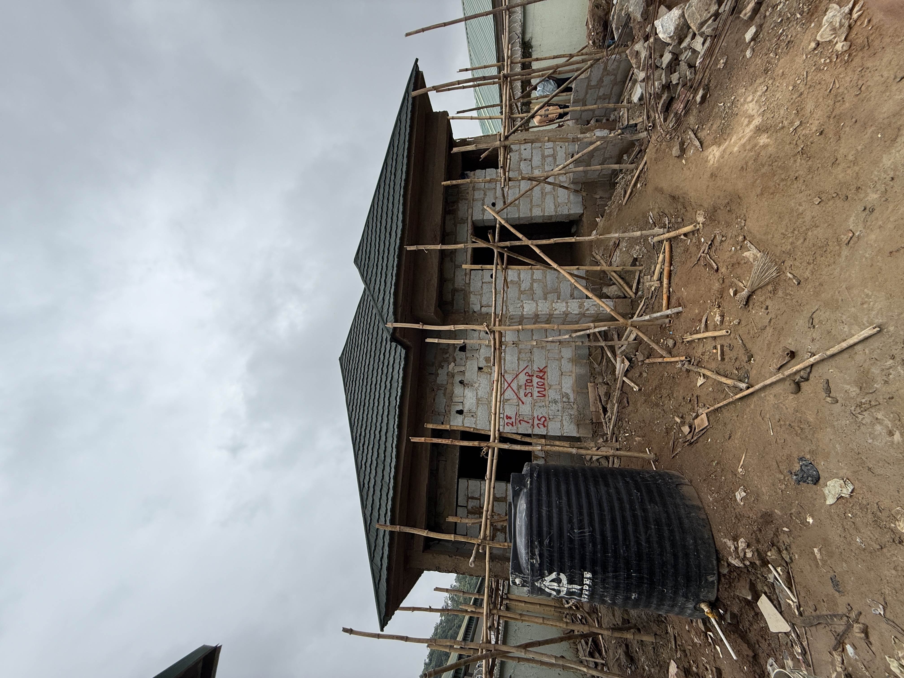
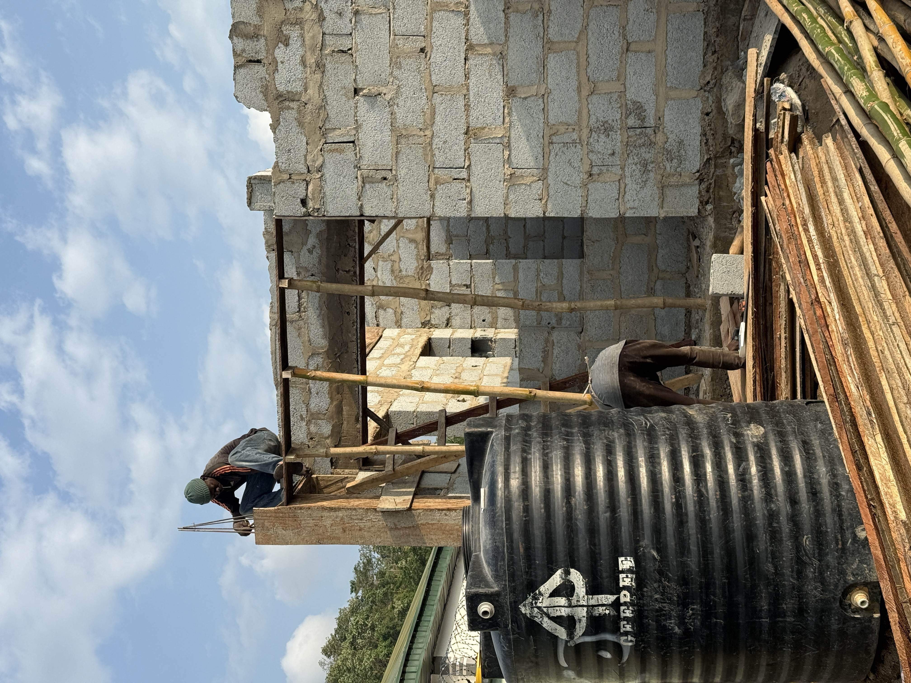

01 · On site
Project coordination & site supervision
Wumba bungalow · Aramet Edge
Co-founded the company, then ran a three-bedroom residential bungalow through structure and finishing. Daily programme, craftsmen, materials, formwork checks before pours, HSE on a live plot in Abuja.
01 · On site
Project coordination & site supervision
Wumba bungalow · Aramet Edge

This is the job that sits under Aramet Edge Construction and Energy, a company I co-founded. I was not visiting. I was coordinating the programme and supervising the site.
Scope covered a three-bedroom bungalow from structure through roof and finishing. I planned daily activities, supervised craftsmen and subcontractors, managed procurement so materials arrived before the next trade, and checked formwork alignment before concrete went in.
HSE was part of the day, not a separate file: access, method, and hazard control on an occupied residential plot.